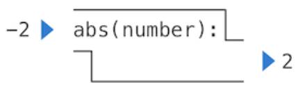

Start!
Chapter 1: Building Abstractions with Functions¶
1.2 Elements of Programing¶
1.2.3 Importing Library Functions¶
Python defines a very large number of functions, including the operator functions mentioned in the preceding section,so we can import them into our programing.
1.2.4 Names and the Environment¶
Names can be bound via = or import.
Names can be bound to functions. For instance, the name max is bound to the max function we have been using.
Interpreter must maintain some sort of memory which is called environment to keep track of the names, values and the bindings.
= can combine multiple values and names.
>>> area, circumference = pi * radius * radius, 2 * pi * radius
>>> x, y = 3, 4.5
>>> y, x = x, y
>>> x
4.5
>>> y
3
1.2.6 The Non-Pure Print Function¶
Pure functions. Functions have some input (their arguments) and return some output (the result of applying them).
Non-pure functions. In addition to returning a value, applying a non-pure function can generate side effects, which make some change to the state of the interpreter or computer.
Take abs and print as an example.


1.3 Defining New Functions¶
The basic fundamental of a function:
The second line must be indented — most programmers use four spaces to indent.(BTW, python uses indentation to define functions)
1.3.1 Environments¶
An environment in which an expression is evaluated consists of a sequence of frames, depicted as boxes.
An environment diagram shows the bindings of the current environment, along with the values to which names are bound.
One function has the intrinsic name and a bound name.(One bound name may refer to different functions, while the intrinsic name can just refer to one only function.)
A description of the formal parameters of a function is called the function's signature.
1.3.5 Choosing Names & Abstract funtions¶
Adapted from the style guide for Python code.
Function names are lowercase, with words separated by underscores. Descriptive names are encouraged.
Function names typically evoke operations applied to arguments by the interpreter (e.g., print, add, square) or the name of the quantity that results (e.g., max, abs, sum).
Parameter names are lowercase, with words separated by underscores. Single-word names are preferred.
Parameter names should evoke the role of the parameter in the function, not just the kind of argument that is allowed.
Single letter parameter names are acceptable when their role is obvious, but avoid "l" (lowercase ell), "O" (capital oh), or "I" (capital i) to avoid confusion with numerals.
Aspects of a functional abstraction.To master the use of a functional abstraction, it is often useful to consider its three core attributes. The domain of a function is the set of arguments it can take. The range of a function is the set of values it can return. The intent of a function is the relationship it computes between inputs and output (as well as any side effects it might generate).
1.4 Designing Functions¶
A function definition will often include documentation describing the function, called a docstring, which must be indented along with the function body. Docstrings are conventionally triple quoted. Such as:
>>> def pressure(v, t, n):
"""Compute the pressure in pascals of an ideal gas.
Applies the ideal gas law: http://en.wikipedia.org/wiki/Ideal_gas_law
v -- volume of gas, in cubic meters
t -- absolute temperature in degrees kelvin
n -- particles of gas
"""
k = 1.38e-23 # Boltzmann's constant
return n * k * t / v
You can see the documenatation using:
1.5 Control¶
Practical Guidance. When indenting a suite, all lines must be indented the same amount and in the same way (use spaces, not tabs). Any variation in indentation will cause an error.
1.5.6 Testing¶
Assertions. Programmers use assert statements to verify expectations, such as the output of a function being tested. An assert statement has an expression in a boolean context, followed by a quoted line of text (single or double quotes are both fine, but be consistent) that will be displayed if the expression evaluates to a false value.
When the expression being asserted evaluates to a true value, executing an assert statement has no effect. When it is a false value, assert causes an error that halts execution.
Doctests. Python provides a convenient method for placing simple tests directly in the docstring of a function. The first line of a docstring should contain a one-line description of the function, followed by a blank line. A detailed description of arguments and behavior may follow. In addition, the docstring may include a sample interactive session that calls the function:
>>> def sum_naturals(n):
"""Return the sum of the first n natural numbers.
>>> sum_naturals(10)
55
>>> sum_naturals(100)
5050
"""
total, k = 0, 1
while k <= n:
total, k = total + k, k + 1
return total
You can verify the interaction via the doctest module.Such as:
To verify the doctest interactions for only a single function, we use a doctest function called run_docstring_examples. This function is (unfortunately) a bit complicated to call. Its first argument is the function to test. The second should always be the result of the expression globals(), a built-in function that returns the global environment. The third argument is True to indicate that we would like "verbose" output: a catalog of all tests run.
>>> from doctest import run_docstring_examples
>>> run_docstring_examples(sum_naturals, globals(), True)
Finding tests in NoName
Trying:
sum_naturals(10)
Expecting:
55
ok
Trying:
sum_naturals(100)
Expecting:
5050
ok
When the return value of a function does not match the expected result, the run_docstring_examples function will report this problem as a test failure.
When writing Python in files, all doctests in a file can be run by starting Python with the doctest command line option:
1.6 Higher-Older Functions¶
Functions that manipulate functions are called higher-order functions.
1.6.6 Currying¶
We can use higher-order functions to convert a function that takes multiple arguments into a chain of functions that each take a single argument.
1.6.7 Lambda Expressions¶
In Python, we can create function values on the fly using lambda expressions, which evaluate to unnamed functions. A lambda expression evaluates to a function that has a single return expression as its body. Assignment and control statements are not allowed.
We can understand the structure of a lambda expression by constructing a corresponding English sentence:
The following definition is correct, but many programmers have trouble understanding it quickly.
1.6.9 Function Decorators¶
>>> def trace(fn):
def wrapped(x):
print('-> ', fn, '(', x, ')')
return fn(x)
return wrapped
>>> @trace
def triple(x):
return 3 * x
>>> triple(12)
-> <function triple at 0x102a39848> ( 12 )
36
The name triple is bound to the returned function value of calling trace on the newly defined triple function. In code, this decorator is equivalent to:
1.7 Recursive Functions¶
A function is called recursive if the body of the function calls the function itself, either directly or indirectly.
Pretty easy to understand, same as recursive functions in c++.
Instead of listing formal parameters for a function, you can write *args. To call another function using exactly those arguments, you call it again with *args. For example,
>>> def printed(f):
... def print_and_return(*args):
... result = f(*args)
... print('Result:', result)
... return result
... return print_and_return
>>> printed_pow = printed(pow)
>>> printed_pow(2, 8)
Result: 256
256
>>> printed_abs = printed(abs)
>>> printed_abs(-10)
Result: 10
10